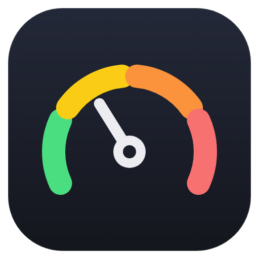

Fleet Monitor
Every machine your Orca reaches, live, in one sidebar panel.
CPU, memory and per-core load, with 30 minutes of history
The busiest workspaces on each machine
Over Orca’s own pairing, with no SSH